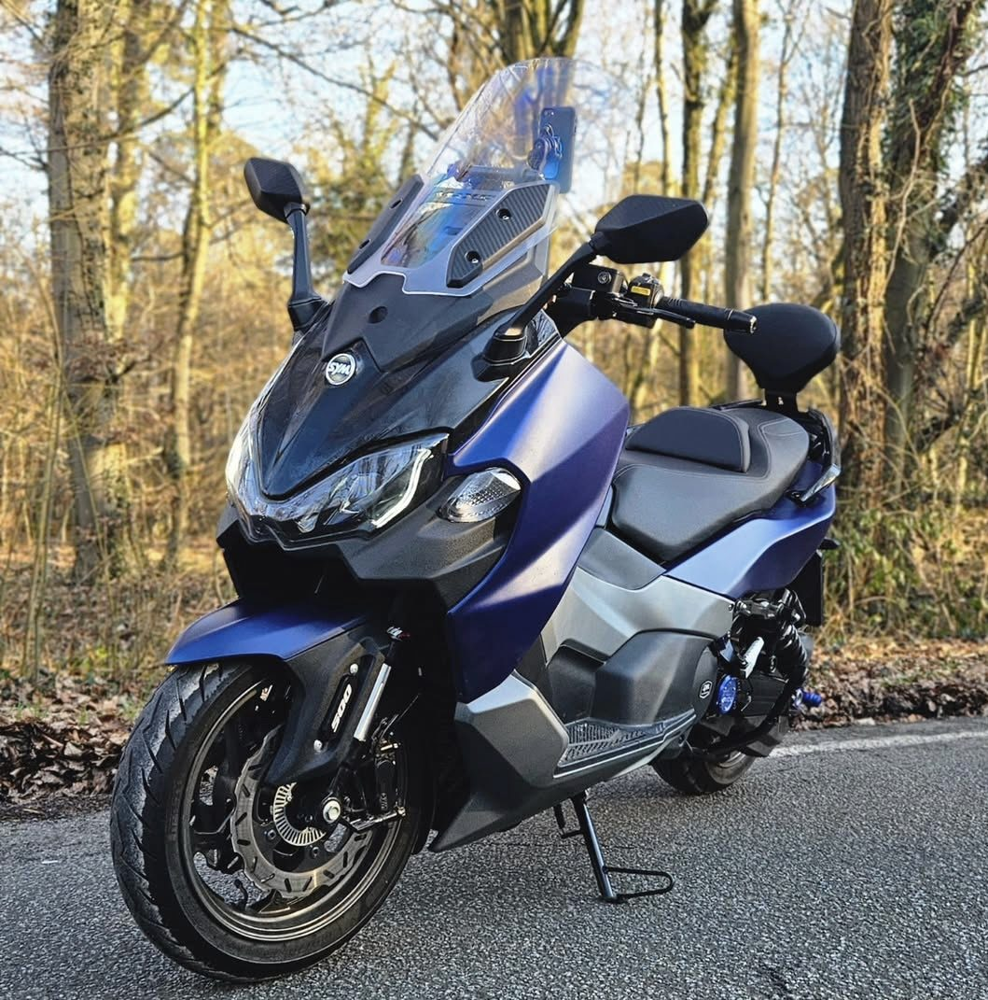

Taller › SYM Maxsym TL 508
Taller · Mantenimiento
SYM Maxsym TL 508 (2024): mantenimiento y accesibilidad mecánica
Periodos de revisión, consumibles con precios de referencia y dónde está cada elemento del único maxiscooter del mercado con transmisión final por cadena.

Un matiz que condiciona el mantenimiento: el TL 508 monta un motor bicilíndrico de 508 cc (DOHC, 8 válvulas, refrigeración líquida) con cárter seco y, en lugar de la habitual transmisión por correa hasta la rueda, transmisión final por cadena como una moto. Eso añade lubrificación de cadena cada 500 km y su cambio cada 15.000 km.
Periodos de mantenimiento oficiales
| Elemento | Intervalo |
|---|---|
| Aceite de motor | 1.er cambio a 1.000 km (rodaje); a partir de ahí cada 5.000 km |
| Colador del filtro de aceite | Limpiar en cada cambio de aceite |
| Cartucho del filtro de aceite | Cada 10.000 km (y en el cambio de rodaje) |
| Filtro de aire del motor | Reemplazar cada 10.000 km |
| Filtros de aire de la caja CVT (2) | Limpiar cada 10.000 km, reemplazar cada 20.000 km |
| Correa CVT | Reemplazar cada 20.000 km |
| Bujías (2, una por cilindro) | Inspección y reemplazo cada 10.000 km |
| Holgura de válvulas | Inspección a los 30.000 km |
| Cadena de transmisión | Lubricar cada 500 km; holgura (10-15 mm) cada 1.000 km; cambio cada 15.000 km |
| Líquido de frenos (DOT 4) | Cada 2 años o 30.000 km |
| Refrigerante | Cada 3 años (nivel en cada revisión) |
Consumibles: tipos y precios de referencia
| Elemento | Tipo / referencia | Precio aprox. |
|---|---|---|
| Aceite de motor | SAE 10W-40, API SL, JASO MA o superior (SYM recomienda SYMOIL S6800, JASO MA2); capacidad 3,5 L total / 2,9 L con filtro | 25-35 € por cambio |
| Filtro de aceite | Cartucho (apriete 18 Nm); equivalente Hiflo HF132 | 4-9 € |
| Filtro de aire | Detrás de la tapa frontal izquierda | 29-36 € |
| Bujías | 2 × NGK CPR7EA-9 (hueco 0,8-0,9 mm, apriete 12 Nm) | ≈ 9,9 €/ud (18,5 € el par) |
| Correa CVT | Ref. SYM 23100-TL1-000 (válida para Maxsym TL 508 E5) | 62-101 € |
| Kit de la CVT | Rodillos y patines (inspección cada 20.000 km) | 15-30 € (estimación) |
| Neumático delantero | 120/70-15 56H (Maxxis Supermaxx Diamond de serie), 2,3 bar | 63-66 € |
| Neumático trasero | 160/60-15 67H, 2,8 bar | ≈ 132 € |
| Líquido de frenos | DOT 4 | 8-11 € |
| Refrigerante | Etilenglicol 50% premezclado, 1,4 L | 11-19 €/L |
| Pastillas de freno | Delante y detrás | 20-25 € (estimación) |
| Batería | MF TTZ-10S, 12V 8,6 Ah | ≈ 74 € |
Accesibilidad mecánica: dónde está cada cosa
- Aceite de motor: nivel por mirilla bajo el motor, tapón de llenado superior y drenaje por tapón inferior (41 Nm). Como lleva cárter seco, el colador del filtro exige desmontaje interior y el manual lo deja en manos del concesionario.
- Filtro de aire: detrás de la tapa frontal izquierda. Hay que abrir la guantera izquierda (2 tornillos), soltar la tapa frontal derecha (2 tornillos) y extraer la tapa con 5 tornillos más para el elemento. Paneles atornillados, sin carenado completo: viable en taller casero.
- Filtros de la caja CVT: 2 unidades (una a cada lado); el manual los asigna al concesionario.
- Refrigerante: ventana de nivel en el lado derecho del faldón inferior más depósito de reserva.
- Cadena: tapa inferior con 2 tornillos y 2 pernos para comprobar la holgura. Lubricación con limpiador y lubricante de cadena sellada.
- Bujías, correa CVT, válvulas: el manual las reserva al concesionario autorizado.
- Fusibles: en la guantera derecha.
Presupuesto de revisión en taller
| Revisión | Operaciones | Estimación |
|---|---|---|
| Cambio de aceite | Aceite + colador + filtro | 60-90 € |
| 10.000 km | Aceite + filtro + aire + bujías + inspecciones | 120-180 € |
| 20.000 km | Correa + kit CVT + filtros CVT + aceite | 250-350 € |
| Cadena (cada 15.000 km) | Cadena + piñón + corona si conviene | 60-100 € (más pieza si hay que cambiarla) |
Ficha técnica del motor
| Cilindrada | 508 cc (68 x 70 mm), compresión 10,9:1 |
| Distribución | 4T, DOHC, 8 válvulas, inyección EFI |
| Refrigeración | Líquida |
| Potencia | 33,5 kW (45,6 CV) a 6.750 rpm |
| Par | 49,9 Nm a 5.250 rpm |
| Lubricación | Cárter seco forzado |
| Transmisión | CVT por correa + embrague centrífugo multidisco húmedo + final por cadena |
| Velocidad máxima / peso | 139 km/h / 227 kg en orden de marcha |
Fuentes
- Manual oficial SYM Maxsym TL 508 (PDF)
- Ficha oficial SYM
- Motofichas — ficha Maxsym TL 508
- Ultimate Specs — Maxsym TL 508
Precios orientativos de tiendas online (2025-2026). Las tarifas de taller son estimaciones: consulta siempre tu concesionario SYM para el presupuesto cerrado. Referencias de filtros originales SYM solo disponibles en concesionario.